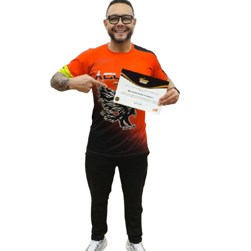
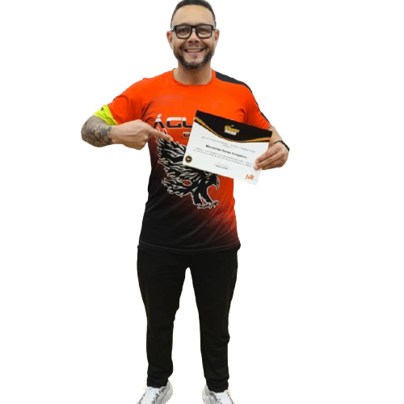

Wanderlan Nunes é um renomado treinador focado no fortalecimento muscular e condicionamento físico, ajudando seus alunos a alcançarem alto desempenho na academia. Com uma trajetória impressionante no esporte, ele conquistou títulos como campeão pan-americano e brasileiro de BMX, demonstrando disciplina, técnica e dedicação ao longo de sua carreira. Apesar de sua formação no BMX, Wanderlan expandiu seu conhecimento para o treinamento funcional e a musculação, onde aplica métodos eficazes para ganho de força, resistência e equilíbrio corporal. Seu trabalho é voltado para indivíduos que buscam aprimorar a performance, prevenir lesões e construir uma rotina saudável baseada em exercícios estratégicos e acompanhamento especializado. Através de planos personalizados, ele orienta desde iniciantes até atletas profissionais, garantindo evolução contínua e resultados sólidos. Seu compromisso vai além da estética, promovendo saúde e qualidade de vida através do treinamento físico.